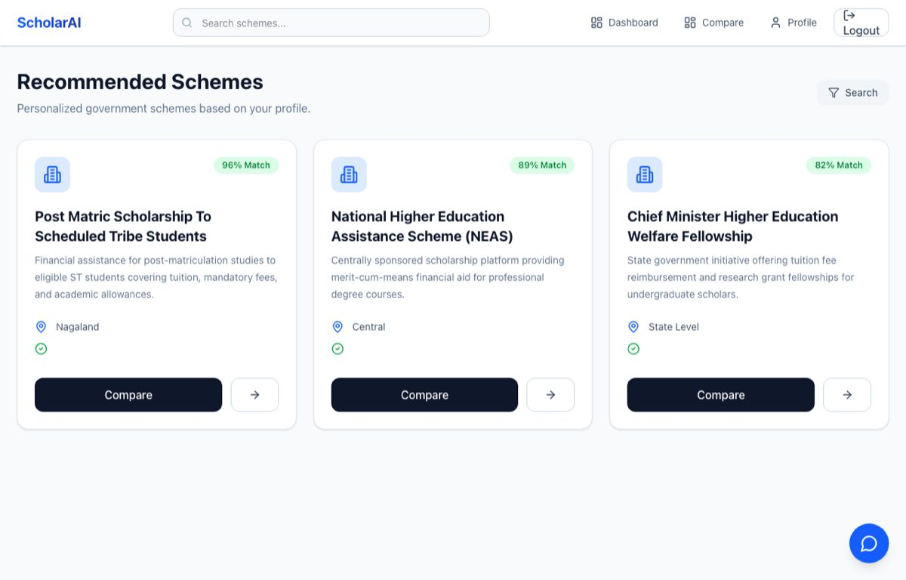
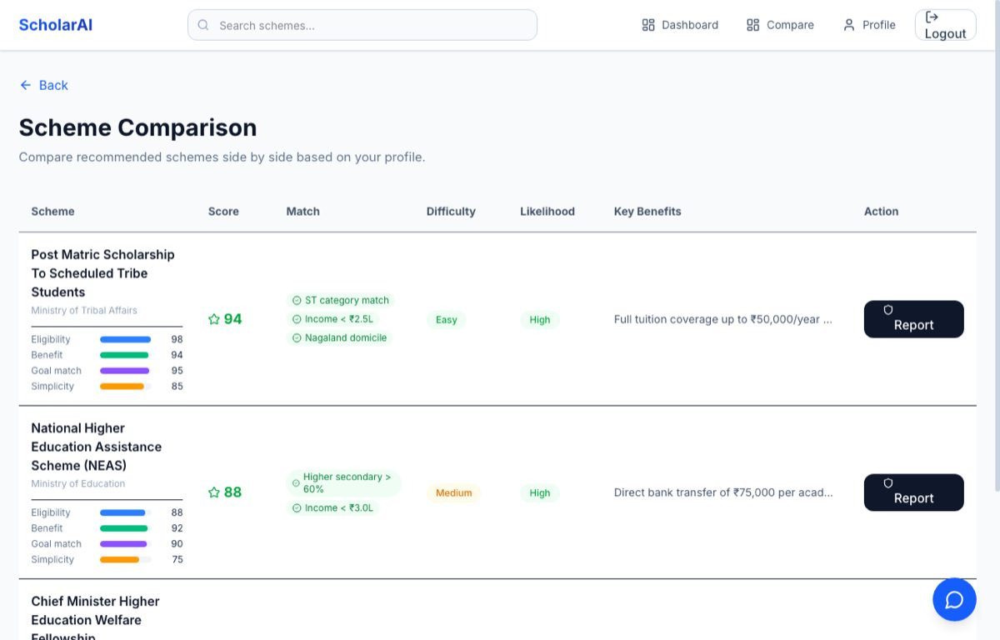

ScholarAI
A scheme-discovery platform built by a 5-person team at the USAII Global AI Hackathon 2026. Our team was a finalist among 6,081+ participants. I was the data engineer: I turned 1,008 scraped scheme records into clean, embedded rows in PostgreSQL/pgvector.
Scheme records normalized, embedded, and loaded by my scripts.
gte-small embeddings stored in pgvector.
5-person team, among 6,081+ participants.
The team's product


The interface, search backend, and LLM pipeline are teammates' work. They run on the data my scripts loaded.
The problem
Indian government scholarship and welfare schemes are published across many portals with no shared format. One page lists required documents as bullets; another runs them together as AadhaarCardIncomeCertificateHostelCertificate. Application steps hide inside paragraphs. Keyword search also fails: a student who types “tuition fee waiver for engineering” will not find a scheme whose official title says “Post Matric Financial Assistance”.
What I built (data engineering)
scraped scheme JSON (input, 1,008 files)
│
▼
batch_normalizer.py split documents and steps, one schema, skip broken files
│
▼
generate_embeddings.py gte-small, 384 dimensions, batches of 32
│
▼
bulk_insert.py Supabase "schemes" table (pgvector), batches of 50- Normalization: maps each raw record to one schema. A regex lookaround splits run-together document names at lowercase-to-uppercase changes; a non-greedy regex pulls out
Step N:instructions. Files that fail to parse or have no name are skipped and reported. - Embeddings:
thenlper/gte-smallthrough SentenceTransformers, over a combined text of name, description, benefits, and eligibility, not the title alone. - Loading: inserts into Supabase PostgreSQL in batches of 50. A failed batch is logged, the run continues, and the script reports how many batches failed.
Key decision: keep the pipeline simple and inspectable
We had one week. I kept each step as a short script that reads and writes one JSON file, so a teammate could open the output, check it, and rerun one step without rerunning the others. Each record carries its fields and its vector together into the database.
What my teammates built
For context only, this is not my work: the database schema and hybrid search (pgvector similarity with full-text and trigram search), a LangGraph pipeline with a local Qwen2.5 3B model for eligibility checks, and the React frontend.
Limitations
- My scripts are one-week hackathon code. They have no automated tests.
- A failed insert batch is logged, not retried.
- I did not write the scraper; the scraped JSON was my input.
My three scripts are in the team repository's data-engineering/ folder.